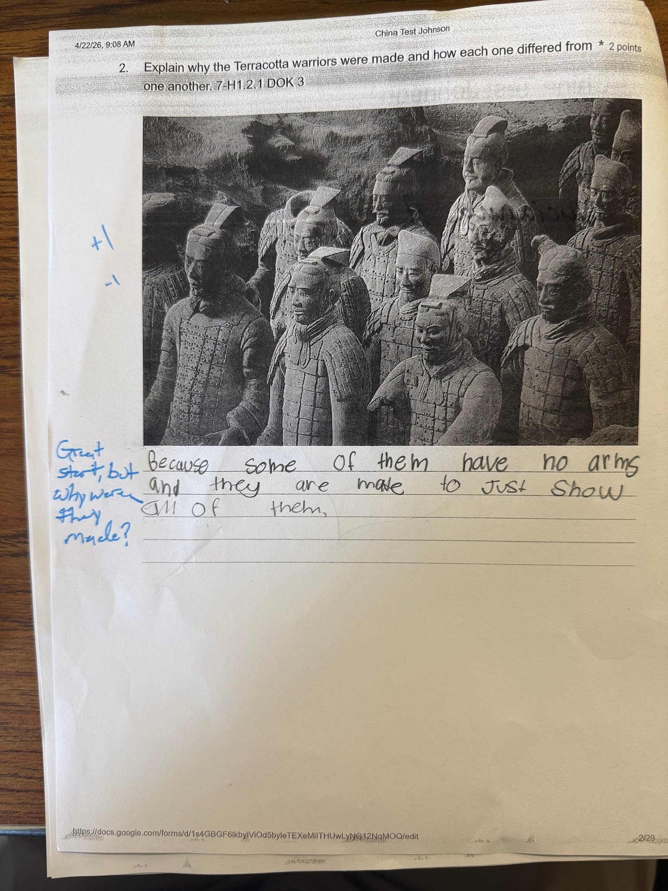

In the example above, when providing feedback on tests and assignments, I like to give students attainable goals. This means that when I am reading a child's essay, or if I’m grading an answer on their test, I’m not going to mark up their entire essay and fill it with every single way it could be improved. Instead, I am going to give them 2-3 ways that they can improve their work and take baby steps towards the ultimate goal. This is important to do because if a student feels as though their entire essay is incorrect or their entire response to a question is incorrect, and they see a paper in front of them that is all marked up with suggestions, they might feel discouraged from even taking a step forward, as it might feel as though they need to climb an entire mountain. In the example above, the response from my student could use a lot of work. However, a lot of students even struggle with writing full sentences. In the above example, I am letting the student know that they have a good start, but that they need to recognize that multiple questions are being asked and they only answered one. This makes the student feel as though their goal is attainable and doesn’t discourage them from improvement.